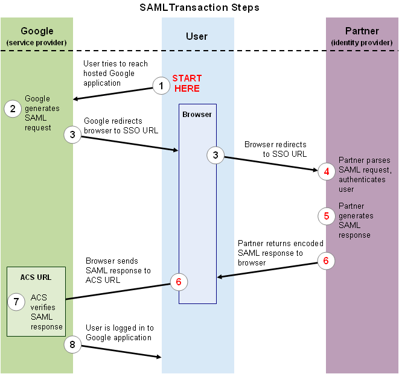
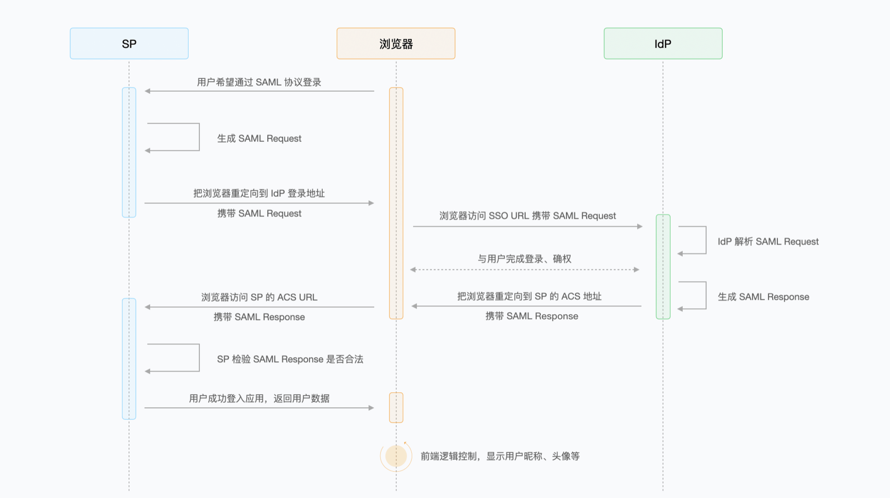

SAML 2.0 协议介绍
SAML（Security Assertion Markup Language，安全断言标记语言）是 OASIS 制定的一套基于 XML 的联合身份标准，用于在不同安全域之间交换认证、属性和授权相关信息。最常见的使用场景是企业单点登录（SSO）：用户访问服务提供方后，被引导到身份提供方完成认证，服务提供方再根据身份提供方签发的断言为用户建立本地会话。
SAML 2.0 中最常见的参与方包括：
- Service Provider（SP，服务提供方）：向用户提供业务服务的系统，例如邮件、OA、云控制台等。SP 依赖 IdP 的认证结果，不直接保存或验证用户密码。
- Identity Provider（IdP，身份提供方）：负责认证用户并签发 SAML Response/Assertion 的系统，例如企业统一身份平台。
- User Agent（用户代理）：通常是浏览器，负责在 SP 和 IdP 之间跳转并传递 SAML 消息。
需要注意的是，SAML 2.0 的主规范来自 OASIS，而不是 RFC 7522。RFC 7522 描述的是在 OAuth 2.0 中使用 SAML 2.0 Bearer Assertion 作为授权授予或客户端认证方式，属于 SAML 在 OAuth 场景下的扩展用法。
参考规范：
- OASIS SAML 2.0 技术概览：https://docs.oasis-open.org/security/saml/Post2.0/sstc-saml-tech-overview-2.0-cd-02.html
- Assertions and Protocols：https://docs.oasis-open.org/security/saml/v2.0/saml-core-2.0-os.pdf
- Bindings：https://docs.oasis-open.org/security/saml/v2.0/saml-bindings-2.0-os.pdf
- Profiles：https://docs.oasis-open.org/security/saml/v2.0/saml-profiles-2.0-os.pdf
- RFC 7522：https://www.rfc-editor.org/rfc/rfc7522
SAML 相关定义
- Assertion（断言）：IdP 对某个 Subject 做出的声明。常见内容包括认证声明（AuthnStatement）、属性声明（AttributeStatement）和授权决策声明（AuthzDecisionStatement）。在 SSO 场景下，SP 最关心的是用户是谁、认证何时发生、断言是否仍在有效期内、断言是否只发给当前 SP 使用。
- Protocol（协议）：定义 SAML 请求和响应消息的结构，例如
AuthnRequest、Response、LogoutRequest、ArtifactResolve等。 - Binding（绑定）：定义 SAML 消息如何承载在底层传输协议上，例如 HTTP Redirect、HTTP POST、HTTP Artifact、SOAP 等。
- Profile（配置档/使用模式）：定义在具体业务场景中如何组合 Assertion、Protocol 和 Binding。Web Browser SSO Profile 是最常见的 SAML 登录模式，除此之外还有 Single Logout、ECP 等。
- Metadata（元数据）：SAML 实体的配置描述，通常包含
entityID、SSO/SLO/ACS 端点、支持的 Binding、签名和加密证书、NameID 格式、组织和联系人信息等。生产环境中，SP 与 IdP 应通过可信渠道交换并维护元数据。
Assertion 示例
下面是一个简化后的断言示例。真实生产报文通常还会包含 XML Signature，签名对象可以是 Response，也可以是 Assertion，具体由双方元数据和配置约定。
1 | <saml:Assertion |
AuthnRequest 示例
AuthnRequest 由 SP 生成并发送给 IdP，用来请求 IdP 对用户进行认证。下面示例中的 ProtocolBinding 表示 SP 希望 IdP 使用哪种 Binding 把 Response 返回到 ACS，而不是当前 AuthnRequest 自己使用的传输方式。
1 | <samlp:AuthnRequest |
常见 Binding
| Binding | 常见承载方式 | 典型用途 | 说明 |
|---|---|---|---|
| HTTP Redirect | URL 查询参数 SAMLRequest 或 SAMLResponse |
SP 发起登录时发送 AuthnRequest |
消息通常先 DEFLATE 压缩，再 Base64 编码，最后 URL 编码。由于 URL 长度限制，适合较短请求。 |
| HTTP POST | HTML 表单字段 SAMLRequest 或 SAMLResponse |
IdP 向 SP 的 ACS 返回 Response |
消息通常 Base64 编码后放入表单字段，由浏览器自动提交。POST 返回的 SAMLResponse 一般不再做 DEFLATE 压缩。 |
| HTTP Artifact | 浏览器只传递一个短 artifact | 对消息体大小或前端暴露有要求的场景 | 接收方拿到 artifact 后，通过后端 SOAP 通道解析真实 SAML 消息。 |
| SOAP | SOAP over HTTP | Artifact 解析、属性查询、部分登出流程 | 通常用于服务器到服务器的后端通信，不直接依赖浏览器跳转。 |
SAML 工作流程
下面以 SP 发起的 Web Browser SSO 为例说明登录流程。

- 用户 Alice 通过浏览器访问 SP，例如
https://mail.google.com/a/my-university.nl。 - SP 发现用户没有本地会话，生成
AuthnRequest，记录请求 ID，并把浏览器重定向到 IdP 的 SSO 地址。使用 HTTP Redirect Binding 时，URL 可能类似：
1 | https://idp.example.com/sso?SAMLRequest=fVLLTuswEN0j8Q...&RelayState=... |
- IdP 接收并解析
SAMLRequest，校验请求来源、ACS 地址、签名等信息。如果用户尚未登录 IdP，IdP 会要求用户完成登录；如果用户已经有 IdP 会话，可能直接跳过登录步骤。 - IdP 认证成功后生成
SAMLResponse，其中包含Status和一个或多个Assertion。IdP 会对Response或Assertion做 XML 签名，必要时还会加密断言。 - IdP 通过浏览器把
SAMLResponse发送到 SP 的 ACS（Assertion Consumer Service）地址。最常见方式是 HTTP POST：IdP 返回一个自动提交的 HTML 表单，表单字段中包含SAMLResponse和可选的RelayState。 - SP 在 ACS 端点接收
SAMLResponse，完成签名、证书、Issuer、Audience、Destination、Recipient、InResponseTo、有效期和防重放校验。 - 校验通过后，SP 从
NameID和属性中映射本地用户，创建应用会话，用户成功登录业务系统。
一个简化后的 SAMLResponse 结构如下：
1 | <samlp:Response |
另一张流程图如下：

IdP 发起登录
除了 SP 发起登录，SAML 还支持 IdP 发起登录。此时用户先进入 IdP 门户，再从 IdP 选择进入某个 SP。IdP 直接向 SP 的 ACS 发送 SAMLResponse，通常没有对应的 AuthnRequest，因此 InResponseTo 可能不存在。
IdP 发起登录实现简单，但 SP 缺少请求关联上下文，安全上需要额外注意：
- 只接受元数据中明确配置的 IdP、ACS 和证书。
- 严格校验
Audience、Recipient、Destination、有效期和签名。 - 对
RelayState做白名单或本地状态映射，避免被利用成开放重定向。 - 使用断言 ID 或 Response ID 做一次性防重放记录。
安全校验清单
SP 接收 SAMLResponse 时，至少应校验以下内容：
- 签名：校验
Response或Assertion的 XML Signature，签名证书必须来自可信元数据或可信配置，不能直接信任响应里自带的证书。 - Issuer：确认响应来自预期 IdP。
- Destination 和 Recipient：确认响应确实发给当前 ACS。
- Audience：确认断言只允许当前 SP 使用。
- InResponseTo：SP 发起登录时，应匹配之前生成并保存的
AuthnRequestID；IdP 发起登录时则要按配置显式允许。 - NotBefore 和 NotOnOrAfter：校验断言有效期，并只允许很小的时钟偏移。
- 防重放：记录已处理的 Response ID 或 Assertion ID，在有效期内拒绝重复使用。
- NameID 和属性映射：确认使用稳定且唯一的用户标识，不要把可变的显示名当作主键。
- RelayState：只用于恢复本地状态或跳转到受信任地址，不能直接当作任意 URL 跳转。
- XML 安全：禁用外部实体解析，防 XXE；使用成熟 SAML 库处理签名验证，避免 XML Signature Wrapping 等问题。
OpenSAML
OpenSAML 是 Shibboleth 项目维护的 SAML Java 工具库，可用于创建、解析、签名、加密、编码和解码 SAML 消息。项目中建议使用 OpenSAML BOM 统一管理版本，并配置 Shibboleth Maven 仓库。
1 | <repositories> |
截至 2026-05-16，Shibboleth Maven 仓库中的 opensaml-bom 最新版本为 5.2.2；实际项目应以仓库元数据和兼容性要求为准。
相关链接：
- Shibboleth Maven 仓库：https://build.shibboleth.net/maven/releases/org/opensaml/
- OpenSAML BOM：https://build.shibboleth.net/maven/releases/org/opensaml/opensaml-bom/
- OpenSAML 使用 Demo（依赖可能较旧，仅作学习参考）：https://bitbucket.org/srasmusson/webprofile-ref-project-v3/src/master/